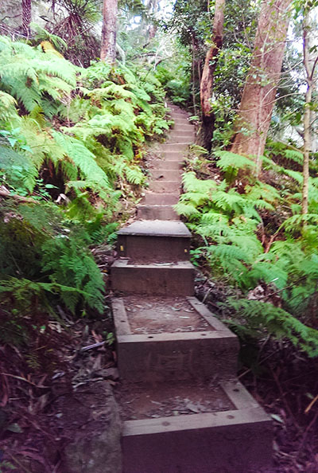
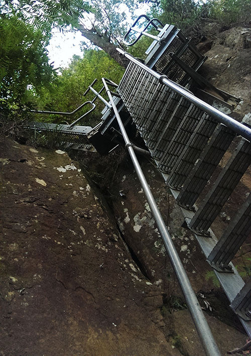

Extremely steep staircase for most of the walk

Towards the summit there are several ladders
General Info
This track ascends the steep Illawarra Escarpment from the foothills
in Austinmer to the Sublime Point Lookout. This track is for very fit walkers only
Getting There
Access to the trail is located from the beach side suburb of Austinmer. Parking is located at the cul-de-sac on Foothills Rd.

 Scenic Site
Scenic Site Hike Grade: HARD
Hike Grade: HARD